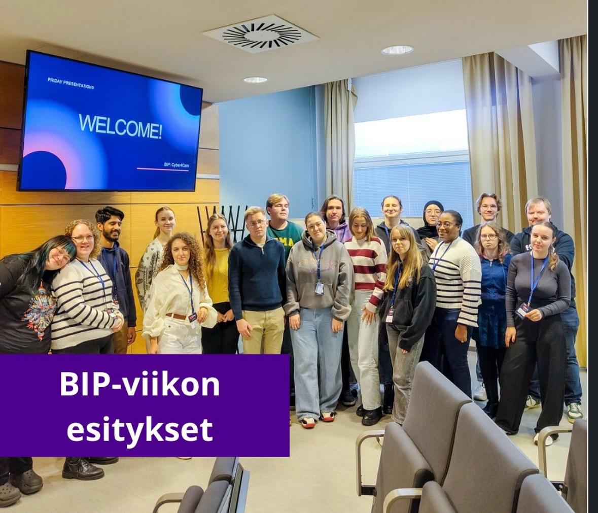
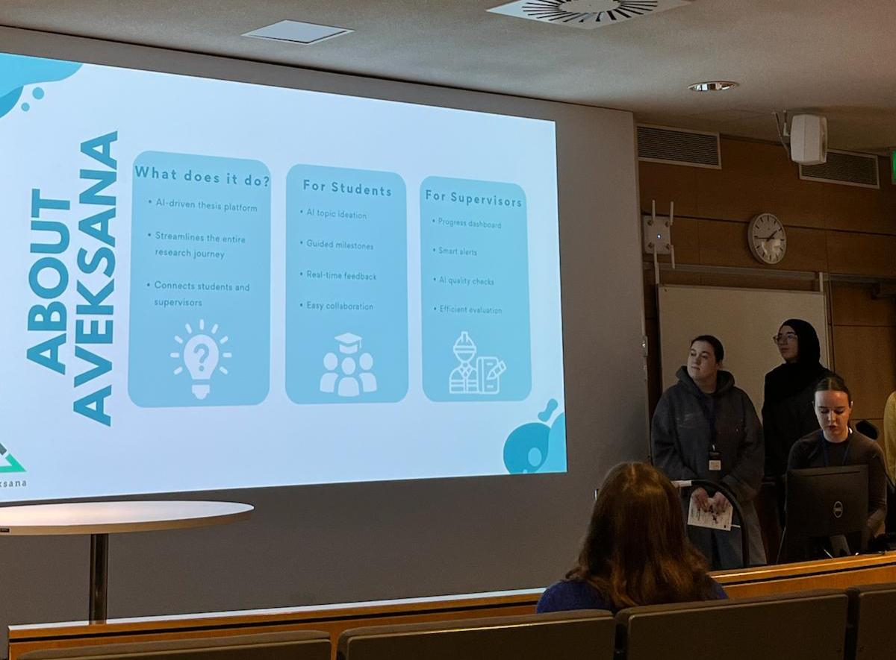

Nour Elhouda
BOUAMLAT
Future étudiante en cycle ingénieur à l'Efrei majeure data et machine learning. À la recherche d'une alternance en Data Science à partir de septembre 2026.
À propos
Intéressée par l'analyse de données et le machine learning, je souhaite développer des modèles prédictifs et transformer les données en informations exploitables pour l'aide à la décision. Mon BUT Informatique m'a permis de bien maîtriser Python, le langage le plus utilisé en BUT Sciences des données, sur lequel j'ai pu m'appuyer tout au long de mes projets. Mon année en BUT Sciences des données m'a ensuite permis de travailler sur des projets couvrant l'ensemble du cycle de la donnée : nettoyage, modélisation, migration et visualisation. Aujourd'hui admise en cycle ingénieur à l'EFREI (majeure Big Data et Machine Learning), je souhaite évoluer vers un métier de Data Scientist et je recherche une alternance en Data Science à partir de septembre 2026, avec un rythme de 3 jours en entreprise et 2 jours à l'école.
Auto-évaluation — les 4 compétences du BUT SD
Mise en œuvre chez La Poste : extraction et préparation de données pour la direction commerciale, création de tableaux de KPI pour le suivi de l'activité et l'aide à la décision. Le projet de pilotage des performances des bureaux de poste en est l'exemple le plus complet, de la conception à la présentation finale aux directeurs de territoire. La principale difficulté a été de m'assurer que les indicateurs produits étaient à la fois fiables et directement interprétables par des interlocuteurs non-techniques.
Acquise principalement lors du projet de Data Mining sur l'analyse criminologique (base de données de plus de 600 000 cas) : préparation et nettoyage des données, tests statistiques pour identifier les variables les plus pertinentes, regroupement par clustering puis comparaison de plusieurs modèles de prédiction. J'ai appris à choisir les bonnes méthodes selon la situation et à présenter des résultats argumentés.
Compétence centrale de mon alternance chez La Poste : j'ai présenté l'outil de pilotage des performances aux directeurs, puis organisé une présentation Teams à l'ensemble des collaborateurs utilisateurs. J'ai répondu à leurs questions, accompagné leurs premières saisies et recueilli leurs retours, une expérience complète de valorisation d'une production de bout en bout.
Développée lors du projet de migration SQL → NoSQL : conception de schémas via normalisation et dénormalisation, modélisation orientée objet des données, puis développement d'un système automatisé de migration entre bases relationnelles et NoSQL avec SQLAlchemy. J'ai également mobilisé cette compétence dans le projet Data Mining à travers la modélisation statistique (clustering K-Means, classification supervisée).
Compétences techniques
Data & Machine Learning
Python (Pandas, NumPy, Scikit-learn) RBases de données
SQL PostgreSQL MySQL MongoDBData Visualisation
Excel Power BIOutils & systèmes
GitHub Jupyter Notebook Docker Windows · LinuxGestion de projet
Méthodes Agile Gantt · PERTLangues
Anglais — B2 (TOEIC)Projets — SAÉ & réalisations
Analyse d'une base de 638 454 homicides aux États-Unis (Murder Accountability Project) pour mieux comprendre les profils des victimes et des auteurs, puis prédiction de la relation victime-auteur dans les affaires non résolues à l'aide de modèles de machine learning.
Conception d'une base de données structurée, puis développement d'un système automatisé pour migrer les données d'une base relationnelle vers une base NoSQL, en garantissant la cohérence des informations.
Challenge en équipe basé sur le dataset Amazon Reviews 2023 : à partir du titre, du texte d'un avis et d'informations sur le produit, l'objectif était de prédire automatiquement la note laissée par le client (de 1 à 5). Les résultats étaient évalués selon l'écart moyen entre la note prédite et la note réelle (plus l'écart est petit, meilleur est le modèle).
Stage / alternance — bilan
Alternante Data Analyst
La Poste
Extraction et préparation de données pour la direction commerciale. Création de tableaux d'analyse et de KPI sous Excel pour le suivi de l'activité commerciale et l'aide à la décision.
Stagiaire Développeuse Python
Cabinet d'assurance
Développement d'une application de gestion clients (PyQt5, PostgreSQL), implémentation de fonctionnalités CRUD et de statistiques automatisées.
BUT Informatique (obtenu) + BUT Sciences des données (alternance)
IUT de Villetaneuse — Université Sorbonne Paris Nord
Statistiques appliquées, programmation Python & R, bases de données relationnelles et NoSQL, visualisation de données, machine learning et gestion de projet.
Cycle ingénieur — Big Data et Machine Learning
EFREI Paris
Admise au cycle ingénieur, majeure Big Data et Machine Learning. Recherche d'une alternance en Data Science à partir de septembre 2026 (3 jours entreprise / 2 jours école).
Bilan de l'alternance (en cours)
Cette alternance chez La Poste me permet de découvrir le métier de Data Analyst au sein d'une direction commerciale : extraction et préparation de données, construction de tableaux de suivi et de KPI sous Excel pour aider à la décision. [Complétez avec ce que cette expérience vous apporte concrètement : gain en autonomie, maîtrise d'Excel avancé, compréhension des enjeux commerciaux, posture professionnelle, etc.]
Découverte du monde professionnel — mon intégration
Mon intégration s'est faite à travers une soirée dédiée aux alternants (escape game, repas) qui m'a permis de créer des liens, puis une journée d'immersion en bureau de poste organisée par ma tutrice : découverte du fonctionnement opérationnel, des tableaux de suivi commercial saisis par les conseillers, et observation d'une réunion de pilotage entre un directeur de territoire et une chargée d'affaires patrimoine. Cette immersion m'a permis de relier les données que j'exploite à leur réalité terrain.
Un projet en entreprise qui m'a plu
J'ai été responsable d'un projet d'envergure pour la Directrice Exécutive (DEX) : la création d'un outil de pilotage des performances des bureaux de poste sur les quatre grands segments d'activité (pilotage du fonds de commerce). J'y ai participé de bout en bout, du brainstorming initial à la mise en place de l'outil, puis à sa présentation à la DEX et aux directeurs de territoires, et enfin à sa formation auprès des collaborateurs par Teams.
Ce que j'ai appris
Gérer un projet de bout en bout (recueil des besoins → conception → présentation → formation), prendre la parole devant des décideurs, et accompagner le changement auprès des futurs utilisateurs.
Qu'ai-je découvert de moi-même grâce au stage / à l'alternance ?
Cette alternance chez La Poste m'a permis de mieux me connaître professionnellement. J'ai découvert que j'apprécie particulièrement le lien entre la technique et le métier : transformer des données brutes en indicateurs compréhensibles pour des équipes non-techniques me motive autant que la modélisation pure. [Ajoutez une anecdote précise : un moment où vous avez réalisé cela.] Cela m'a aidée à confirmer mon souhait d'évoluer vers un métier de Data Scientist, à l'interface entre l'analyse technique et l'aide à la décision.
Concordance entre mes valeurs et celles de l'entreprise
Avant cette alternance, j'ai cherché une structure dont les valeurs résonnaient avec les miennes. La Poste m'a attirée pour son rôle de service public, sa présence sur tout le territoire et son engagement affiché en matière de transition écologique et de proximité. Voici les points de convergence que j'ai identifiés :
Rigueur & fiabilité — Le Groupe La Poste valorise la fiabilité de ses données et de ses services, ce qui correspond à ma façon de travailler : vérifier, fiabiliser et documenter avant de transmettre un indicateur.
Service & utilité concrète — La culture d'entreprise est tournée vers l'utilité pour les clients et les territoires, une valeur que je retrouve dans ma volonté de produire des analyses réellement utiles à la décision.
[Votre 3ᵉ valeur partagée] — [Par exemple : transition écologique, diversité, esprit d'équipe — expliquez pourquoi cette valeur vous correspond personnellement.]
RSE — Responsabilité sociétale
Le Groupe La Poste s'engage sur plusieurs axes RSE que j'ai pu observer ou découvrir au quotidien lors de mon alternance :
Environnement
[Décrivez les pratiques environnementales observées : par exemple la dématérialisation des documents, les engagements de neutralité carbone, ou l'usage de véhicules électriques pour la livraison.]
Social & diversité
[Décrivez les engagements sociaux observés : politique de formation des alternants, accessibilité des services postaux sur le territoire, diversité des équipes.]
Gouvernance & éthique
[Décrivez les pratiques de gouvernance observées : confidentialité et protection des données clients, transparence dans la construction des indicateurs commerciaux.]
Ce dont je suis la plus fière — 3 compétences transverses
Adaptabilité
En arrivant chez La Poste, je maîtrisais Excel de façon moyenne. Mes missions m'ont demandé de travailler exclusivement avec Excel avancé (tableaux croisés dynamiques, formules complexes, mise en forme de tableaux de pilotage). J'ai dû monter en compétence rapidement sur cet outil pour répondre aux attentes de l'équipe, et je le maîtrise aujourd'hui à un niveau avancé.
Esprit critique & analyse
Lors du projet de Data Mining, je ne me suis pas contentée d'appliquer des modèles : j'ai comparé Logistic Regression, Decision Tree et KNN, analysé leurs performances et interprété les résultats de la segmentation K-Means pour en tirer des conclusions argumentées plutôt qu'un simple résultat brut.
Travail en équipe
Sur le projet de pilotage du fonds de commerce pour la DEX, j'ai dû échanger avec différents interlocuteurs (DEX, directeurs de territoires, collaborateurs terrain) et adapter ma communication selon mon audience. Une expérience qui m'a appris à fédérer autour d'un outil commun et à accompagner sa prise en main par les équipes.
Passeport culturel
Au-delà des cours, j'ai vécu une expérience internationale marquante et je maintiens une veille active sur les sujets data et IA.
🌍 Hackathon international — TAMK University (Finlande)
Participation à un hackathon en équipe internationale autour de problématiques data et informatique, avec développement d'une solution en temps limité. Acquis : travail en équipe, résolution de problèmes, communication en anglais.
📰 Veille technologique
Je suis régulièrement des newsletters comme Data Science Weekly et des comptes LinkedIn de Data Scientists, ainsi que le blog Towards Data Science, pour suivre les avancées en machine learning et en IA.


Objectifs & poursuite d'études
Je suis admise au cycle ingénieur de l'EFREI Paris (2026-2029), au sein de la majeure Big Data et Machine Learning. Ce choix est dans la continuité directe de mon BUT Sciences des données : il me permettra d'approfondir mes compétences en machine learning et big data tout en poursuivant en alternance, pour construire un profil de Data Scientist solide à la fois technique et opérationnel.
Trouver une alternance en Data Science à partir de septembre 2026 (rythme 3 jours entreprise / 2 jours école) pour démarrer mon cycle ingénieur à l'EFREI dans de bonnes conditions.
Valider mon cycle ingénieur Big Data et Machine Learning (2026-2029) en développant une expertise solide en modélisation prédictive et en traitement de données à grande échelle.
Évoluer vers un poste de Data Scientist, en mettant la donnée au service de l'aide à la décision dans des contextes métier concrets.
Contact
Disponible pour une alternance à partir de septembre 2026
bouamlat.nourelhouda1@gmail.com
06 05 60 96 05